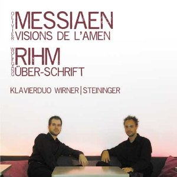

Multimedia
Chèrs visiteurs,
Sur cette page j´aimerais vous présenter mon nouveau CD "Solo" qui est apparue en novembre 2011 ainsi que le CD "Vision" avec des oeuvres pour deux pianos qui est apparue en février 2011.
Pour l´acheter (15€ + frais d´envoi), veuillez cliquer sur l´image ou veuillez m´écrire via le formulaire "Contact".
 
Ici, vous pouvez égalment écouter et voir quelques pièces de mon répertoire.
Sur mon site j´ai crée des liens vers d´autres sites. Pour tous ces sites je précise, que je n´ai aucune résponsabilité et aucune influence sur leurs contenu. Je me distance du contenu et de la présentation de tous les sites qui sont joignable à partir de www.yannickwirner.com.